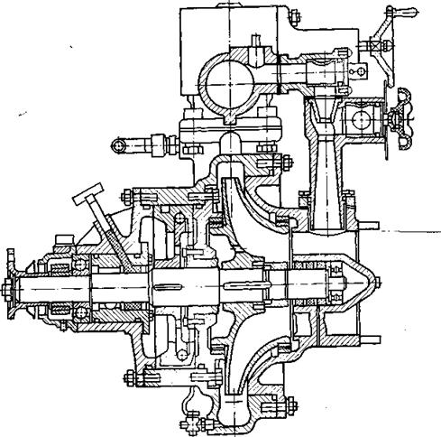
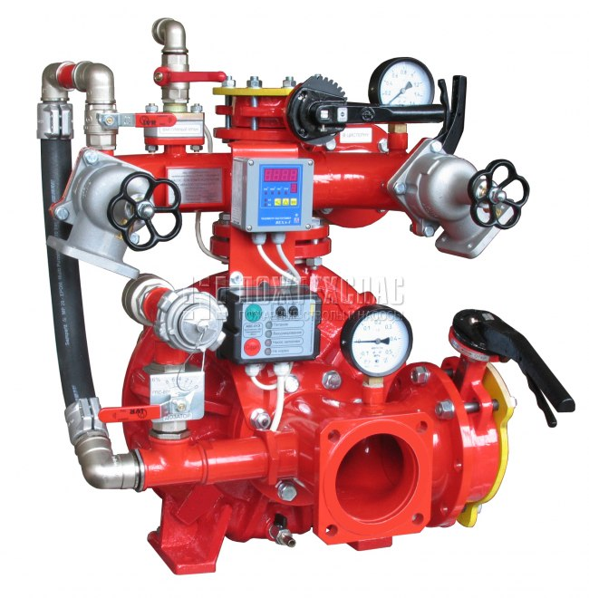

Б.К.1. Орталықтан тепкіш ПН-40УА, ПН-60, ПН-110 Б өрт сорғыларының құрылымын, жұмыс принципін, техникалық сипаттамасын зерттеу.
ПН-40-УА
Сору патрубігінің диаметрі, мм=125
Қысым патрубігінің саны=2
Қысым патрубігінің диаметрі, мм=80
Жұмыс дөңгелегінің диаметрі, мм=320
Біліктің айналу жиілігі, об/мин=45
Номиналды беру, л/с=40
Қысым, м=100
Сору биіктігі, м=7
Сорғыштың ПӘК=0,58
Тұтынылатын қуат, кВт=68
Вакуум-аппарат түрі =ГВА
Тудыратын сирету, МПа=0,077
Сору уақыты, с=35


ПН-40УА өрт сорғыштары—бірсатылы ортадан тепкіш консульды унифицирленген сорғыш. Ол сорғыштан 4, коллектордан 3, көбіктүзгіштен ПС-5 және екі задвижкадан тұрады 1.
Корпус 20, қақпақ 13 және жұмыс дөңгелегі 14 алюминий қорытпасынан (АЛ9В), ал сору потрубогі 12 шойыннан(СЧ-15-32). Сорғыш корпусы 20 разъемді, цилиндрлік бөлігінен (май ваннасы) және фланцпен аяқталатын бір спиралды потрубоктан тұрады. Қақпақ корпустың цилиндрлік расточкасында орталықтандырылады және аязға тұрақты резина сақинасымен тығындалынады